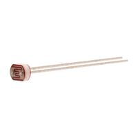
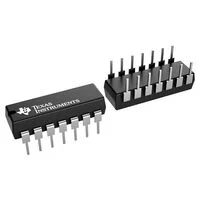
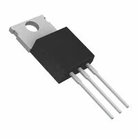
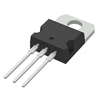
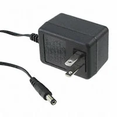
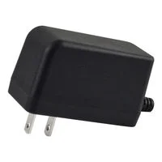
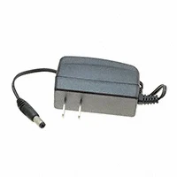

Component Selection — Automated Laundry Folding Device
Individual Subsystem: Photoresistor-based garment presence sensing, operational-amplifier signal conditioning, start/stop controls, LED status indication, and regulated 5 V power supply.
1. Photoresistor (LDR)
Table 1: Photoresistor Comparison
| Solution | Pros | Cons |
|---|---|---|
 Option 1: Advanced Photonix PDV-P8001 $1.60/each View PDV-P8001 on DigiKey |
• Low-cost light-sensitive resistor. • Through-hole construction simplifies installation. • Can be connected to a microcontroller ADC using a voltage divider. |
• Requires calibration for different lighting conditions. • Ambient lighting changes may cause incorrect detection. • Cannot directly distinguish clothing from other objects. |
 Option 2: Advanced Photonix PDV-P8103 $0.72/each View PDV-P8103 on DigiKey |
• Very inexpensive compared with the other candidates. • Through-hole leads simplify circuit assembly. • Higher resistance can reduce voltage-divider current consumption. |
• Requires a voltage-divider circuit and calibration. • Readings can vary with room lighting. • Response is slower than many semiconductor optical sensors. |
 Option 3: Advanced Photonix PDV-P8104 $0.90/each View PDV-P8104 on DigiKey |
• Low-cost light detection solution. • High resistance under low illumination conditions. • Through-hole package simplifies prototyping. |
• Higher resistance circuits may be more sensitive to electrical noise. • Detection thresholds depend on ambient illumination. • Requires calibration and suitable sensor placement. |
Choice: Option 2 — Advanced Photonix PDV-P8103.
Rationale: The PDV-P8103 chosen because it is inexpensive and easy to connect to our circuit. It can help detect when clothing covers the sensor. We will need to adjust the light threshold so changes in room lighting do not trigger a false reading.
2. Operational Amplifier
Table 2: Operational Amplifier Comparison
| Solution | Pros | Cons |
|---|---|---|
 Option 1: Texas Instruments LM324N — Quad Operational Amplifier, 14-PDIP $0.58/each View LM324N on DigiKey |
• Four amplifier channels can support multiple analog sensing stages. • Through-hole DIP package simplifies breadboard testing and replacement. • Low cost and operates from a single 5 V supply. |
• Output does not swing fully to the positive supply rail. • Higher input bias current can introduce errors with high-resistance sensor networks. • Limited output swing reduces available ADC signal range. |
 Option 2: Texas Instruments LM324AN — Quad Operational Amplifier, 14-PDIP $0.57/each View LM324AN on DigiKey |
• Four independent channels accommodate buffering and active filtering. • Through-hole package suits educational prototyping. • Low unit cost and broad single-supply operating range. |
• Output cannot approach the 5 V positive rail as closely as a rail-to-rail device. • Input bias current is less suitable for very high-impedance sensor signals. • No particular advantage over the existing MCP6004 circuit. |
 Option 3: Microchip MCP6004-I/P — Quad Rail-to-Rail Operational Amplifier, 14-PDIP $0.59/each View MCP6004-I/P on DigiKey |
• Rail-to-rail output makes better use of the 0–5 V ADC input range. • Very low input bias current is well suited to the photoresistor voltage divider. • Four amplifier channels and a through-hole DIP package support buffering and filtering. |
• Maximum supply voltage is only 6 V, so a regulated 5 V rail is required. • Limited bandwidth and slew rate make it unsuitable for high-speed signals. • Unused amplifier channels should be properly terminated or handled in the design. |
Choice: Option 3 — Microchip MCP6004-I/P Operational Amplifier.
Rationale: The MCP6004 was selected because it works with our 5 V supply and handles the photoresistor signal well. It has enough amplifier channels for our buffer and filter, and its DIP package is easy to work with. Additionally, we have prior experience using it in our labs.
3. Voltage Regulator
Table 3: Voltage Regulator Comparison
| Solution | Pros | Cons |
|---|---|---|
 Option 1: onsemi MC7805CTG — Fixed 5 V Linear Regulator, TO-220 $0.99/each View MC7805CTG on DigiKey |
• Fixed 5 V output works with the sensor and microcontroller electronics. • TO-220 through-hole package is straightforward to mount. • Includes thermal and short-circuit protection. |
• Linear regulation wastes the voltage difference as heat. • May require a heat sink at higher load currents. • Does not offer the exact selected regulator part number used in the schematic. |
 Option 2: Texas Instruments LM2940CT-5.0/LF01 — Fixed 5 V Low-Dropout Regulator $2.18/each View LM2940CT-5.0/LF01 on DigiKey |
• Low-dropout architecture can maintain regulation with less input headroom. • Fixed 5 V output supports the logic and analog circuit. • Includes protection features for abnormal conditions. |
• More expensive than standard 7805 regulators. • Still dissipates heat when reducing 9 V to 5 V. • Requires careful verification of output capacitor requirements and footprint. |
 Option 3: STMicroelectronics L7805ABV-DG — Fixed 5 V Linear Regulator, TO-220 $1.53/each View L7805ABV-DG on DigiKey |
• Converts the proposed 9 V adapter input to the required regulated 5 V rail. • Through-hole TO-220 package matches the intended schematic implementation. • Fixed output, thermal shutdown, and short-circuit protection simplify power design. |
• Power is lost as heat because it is a linear regulator. • Available current depends on temperature and heat dissipation. • Input and output bypass capacitors and correct pin orientation are required. |
Choice: Option 3 — STMicroelectronics L7805ABV-DG Voltage Regulator.
Rationale: L7805ABV-DG because it gives us the 5 V our circuit needs from a 9 V adapter. It is simple to use, matches our schematic, and includes basic protection.
4. Wall Power Adapter
Table 4: Wall Power Adapter Comparison
| Solution | Pros | Cons |
|---|---|---|
 Option 1: Triad Magnetics WDU9-500 — 9 V, 500 mA, 4.5 W $21.67/each View WDU9-500 on DigiKey |
• Provides a 9 V DC output suitable for the 5 V regulator input. • North American wall plug and center-positive 5.5 × 2.1 mm barrel connector. • External enclosed adapter avoids designing a mains-voltage supply. |
• More expensive than the selected option. • 500 mA output may limit future subsystem expansion. • Connector fit and actual circuit current must still be verified. |
 Option 2: Bel Power Solutions SWI12-9-N-P5 — 9 V, 1.2 A, 11 W $16.19/each View SWI12-9-N-P5 on DigiKey |
• Higher current rating allows more flexibility for additional low-voltage electronics. • Center-positive 5.5 × 2.1 mm barrel plug and North American AC blades. • Regulated external power source with no exposed mains wiring. |
• More expensive than the selected option. • Additional available current does not increase the linear regulator's thermal capability. • Barrel connector dimensions and polarity still require confirmation. |
 Option 3: GlobTek WR9HD1000CCP-F(R6B) — 9 V, 1 A, 9 W $10.35/each View GlobTek 9 V Adapter on DigiKey |
• Regulated 9 V output provides sufficient input voltage for the selected L7805 regulator. • Center-positive 5.5 × 2.1 mm barrel plug and standard North American wall connection. • Compact, economical 1 A external supply provides useful current margin for the sensing subsystem. |
• Barrel plug must match the selected switched jack's physical dimensions and polarity. • Wall-mounted housing can obstruct an adjacent outlet. • The downstream L7805 may require thermal management even though the adapter supports 1 A. |
Choice: Option 3 — GlobTek WR9HD1000CCP-F(R6B), 9 V DC Wall Power Adapter.
Rationale: The GlobTek adapter was an ideal choice because it provides 9 V, has enough current for our sensing circuit, and costs less than the other options. Its barrel plug should work with our design, but the barrel jack size and polarity still needs to be confirmed.